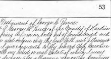

An abstract of basic facts, as well as downloadable PDF of the Will of George C. Pence (d. 1865) from Whitley county, Indiana and Hardin county, Iowa.
Abstract (and link to online image of original document) for the marriage record of Mary Jane Hazen and John Pence in Whitley, Indiana, United States from 1865.
Abstract (and link to online image of original document) for the marriage record of Sarah Strean and John Pence in Whitley, Indiana, United States from 1851.
Abstract of the delayed birth certificate of Carrie B. (Long) Pence, granted in Whitley, Indiana, United States in 1942 for her birth in 1888 in same county.
Abstract (as well as links to original document images) of the marriage record of Mary Florence Ruckman and Wilbert Laverne Pence in Whitley, Indiana, United States from 1899.
Abstract (and link to online image of original document) for the marriage record of Nancy A. Hedges and Joseph M. Pence in Whitley, Indiana, United States from 1883.
Transcript (as well as links to original document images) of the marriage application, license and certificate of Carrie B. Long and Heber J. Pence in Whitley, Indiana, United States from 1909.
Transcript (as well as downloadable PDF) of the marriage record of Betty Jean Pence and William A. Meyers in Whitley, Indiana, United States from 1944.
Newspaper reports on and obituaries for Heber J. Pence, Joseph Hawk, and Frederick Coy, following their deaths at a Whitley county railroad crossing in 1929.
WARNING: these articles contain some graphic descriptions of the death of these 3 men, as seems common in newspapers of the time.
 Abstract (and link to online image of original document) for the marriage record of Sarah Strean and John Pence in Whitley, Indiana, United States from 1851.
Abstract (and link to online image of original document) for the marriage record of Sarah Strean and John Pence in Whitley, Indiana, United States from 1851. An obituary for George C. Pence of Hardin county, Iowa (and also Whitley county, Indiana) from 1865.
An obituary for George C. Pence of Hardin county, Iowa (and also Whitley county, Indiana) from 1865. Abstract of the marriage license and certificate of Elsie (Hettinger) Sleesman and Thomas A. Rhodes in Whitley, Indiana, United States from 1922.
Abstract of the marriage license and certificate of Elsie (Hettinger) Sleesman and Thomas A. Rhodes in Whitley, Indiana, United States from 1922. Abstract of the delayed birth certificate of Carrie B. (Long) Pence, granted in Whitley, Indiana, United States in 1942 for her birth in 1888 in same county.
Abstract of the delayed birth certificate of Carrie B. (Long) Pence, granted in Whitley, Indiana, United States in 1942 for her birth in 1888 in same county. Three obituaries for Mary Florence Ruckman Pence of Whitley county, Indiana from 1967.
Three obituaries for Mary Florence Ruckman Pence of Whitley county, Indiana from 1967. Two obituaries for Carrie Long Pence Raypole of Churubusco and Whitley county, Indiana from 1972.
Two obituaries for Carrie Long Pence Raypole of Churubusco and Whitley county, Indiana from 1972. Transcript (as well as links to original document images) of the marriage application, license and certificate of Carrie B. Long and Heber J. Pence in Whitley, Indiana, United States from 1909.
Transcript (as well as links to original document images) of the marriage application, license and certificate of Carrie B. Long and Heber J. Pence in Whitley, Indiana, United States from 1909. Transcript (as well as downloadable PDF) of the marriage record of Betty Jean Pence and William A. Meyers in Whitley, Indiana, United States from 1944.
Transcript (as well as downloadable PDF) of the marriage record of Betty Jean Pence and William A. Meyers in Whitley, Indiana, United States from 1944. Two obituaries for Nancy Ann (Hedges) Pence of Whitley county, Indiana from 1929.
Two obituaries for Nancy Ann (Hedges) Pence of Whitley county, Indiana from 1929. Newspaper reports on and obituaries for Heber J. Pence, Joseph Hawk, and Frederick Coy, following their deaths at a Whitley county railroad crossing in 1929.
Newspaper reports on and obituaries for Heber J. Pence, Joseph Hawk, and Frederick Coy, following their deaths at a Whitley county railroad crossing in 1929. An obituary for John Pence of Whitley county, Indiana from 1895.
An obituary for John Pence of Whitley county, Indiana from 1895.